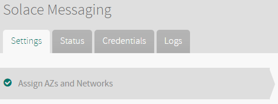
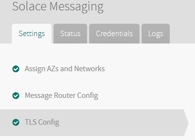
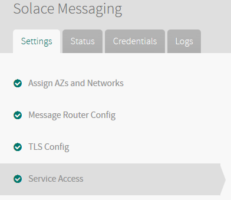

Installing and Configuring Solace Messaging for Pivotal Cloud Foundry
This topic describes how to install and configure Solace Messaging for Pivotal Cloud Foundry (PCF). Before installing Solace Messaging for PCF, you must complete the prerequisites.
Review Resource Requirements
Review the resource and IP requirements for installing the Solace Messaging for PCF tile.
| Product | Resource | Instances | CPU | Ram (MB) | Ephemeral (MB) | Persistent (MB) | Static IP | Dynamic IP |
|---|---|---|---|---|---|---|---|---|
| Solace Messaging for PCF | Solace Service Broker | 1 | 1 | 1024 | 1024 | 0 | 0 | 1 |
| Solace Messaging for PCF | Large-VMR | 1* | 4 | 12288 | 10240 | 204800* | 1 | 0 |
| Solace Messaging for PCF | Medium-VMR | 1* | 2 | 4096 | 10240 | 51200* | 1 | 0 |
| Solace Messaging for PCF | Community-VMR | 1* | 4 | 4096 | 10240 | 10240* | 1 | 0 |
* Note: You can modify the number of Instances and Persistent disk size when configuring the Solace Messaging for PCF tile. Solace recommends not changing the other parameters. For more information, see the Configure Solace Messaging for PCF tile below.
Prerequisites
The Solace Messaging for PCF Service Broker requires the following:
- Java buildpack 3.7.1 or higher.
- The MySQL for PCF tile. When configuring the tile, set the maximum storage in the Service Plan section to 100 MB. See the MySQL for PCF documentation for more information on how to install and configure the tile.
Install Solace Messaging for PCF
To install Solace Messaging for PCF, perform the following steps:
- Download the product file from Pivotal Network.
- Upload the product file on the Ops Manager Installation Dashboard.
- Click Add next to the uploaded Solace Messaging tile in the Ops Manager Available Products view to add it to your staging area.
- Click the Solace Messaging tile.
- Follow the steps in the section below to configure the tile.
Configure Solace Messaging for PCF
To configure Solace Messaging for PCF, perform the following steps:
- From the Settings tab of the Solace Messaging tile, click Assign AZs and Networks. 
- Under Network choose the network where Solace Messaging should run.
- Click Save.
- Click Message Routing Config.

Under Admin user password, pick a password for the Virtual Message Routers
adminuser.
Under Support user password, pick a password for the Virtual Message Routers
supportuser.
Under Starting Port, enter a port where the messaging services on the VMRs (e.g. MQTT, REST, SMF, etc) will start listening from. For example ‘7000’. The exact port numbers chosen for each service will be based on this starting port and specified in the
VCAP_SERVICESenviornment variable passed to applications. See Example Environment Variable for an example.
Click Save.
(Optional) Click TLS Config. By configuring TLS you allow messaging between applications and the Solace VMRs to be encrypted. Applications requiring encryption would then need to use the TLS-specific URLs passed in the
VCAP_SERVICESenvironment variable. See Example Environment Variable for more information on theVCAP_SERVICESenvironment variable. If TLS is not configured the TLS specific URLs will continue to be passed in theVCAP_SERVICESenvironment variable but will fail to connect to a VMR if used.
(Optional) Configure Message Router’s RSA certificate (Server Certificate) either by pasting in a certificate and private key in PEM format or asking one to be generated by pressing Generate RSA Certificate
Note: The server certifcate configured will be used by all Solace VMRs deployed and as such all VMRs deployed in a PCF instances will have the same identification.
Note 2: Communication between the Solace Messaging Service Broker and VMRs is also encrypted if a TLS certificate is configured. The Service Broker uses the Container Certificate Trust Store Framework to validate the server certificate returned by VMRs. So if the framework is not operational when the tile is deployed the Service Broker will be unable to validate server certificates sent by the VMRs and the tile will fail to deploy. In development environments it may be acceptable to not require server certificate validation in which case the **Disable RSA Server Certificate validation on the Service Broker (For development only)** checkbox can be selected. This checbox should never be selected in production deployments, instead the framework should be made operational. See [Configuring Ops Manager Director for VMware vSphre](https://docs.pivotal.io/pivotalcf/1-8/customizing/vsphere-config.html#security-config) for an example of how to configure the Container Certificate Trust Store Framework
(Optional) Click Save.
Click Service Access

Enable the Enable global access to plans of service solace_messaging option.
Note: To control access to Solace Messaging’s service plans on a case-by-case basis, leave this option unchecked.
Click Save.
Click Resource Config.
If necessary, use the drop-down menus to increase the number of instances of the
Large-VMR,Medium-VMRandCommunity-VMRjobs. This controls the number of VMR instances of each type that are statically created when the tile is deployed. VMRs are then dynamically bound to/unbound from applications on demand post-deployment.Large-VMRjob instances are used by service instances created from thelargeservice plan.Medium-VMRjob instances are used by service instances created from thesharedservice plan. And 'Community-VMR’ job instances are used by service instances created from thesharedservice plan. The number of job instances can be increased after the tile is deployed without impacting already bound applications however reducing the number of instances post-deployment can result in application failure and total message loss. The size of the persistent disk used by VMR instances can also be changed both before and after deployment. Unlike increasing the number of job instances post-deployment, increasing the size of the persistent disks post-deployment will impact the service of already bound applications however messages will not be lost. Reducing the size of the persistent disk post-deployment is not recommended and can result in message loss, inoperable VMRs, and/or undefined behaviors. Solace recommends keeping the default values for VM Type.Note: The maximum number of service instances that can concurrently exist for the
sharedservice plan is equal to five times the number ofMedium-VMRinstances. The maximum number of service instances that can concurrently exist for thelargeandcommunityservice plans is equal to the number ofLarge-VMRandCommunity-VMRinstances respectively.
Click Save.
Click Installation Dashboard at the top left corner of the screen to leave the tile configuration and go back to dashboard.
Click Apply Changes to deploy the tile.
After the tile has deployed, see the Creating and Binding Solace Messaging Service Instances topic for information about creating instances of the Solace Messaging service and binding them to applications.